十七岁，一个懵懵懂懂、年少稚嫩的男孩，背起行囊入伍，来到南疆的军营里，一守就是四年，不能探亲返家。
多少次梦回故里，醒来不见家人，来去匆匆，悲凉而凄楚，近乎抑郁。陪着他度过那些绵长思念之夜的，唯有一本司马迁的《史记》，和一支口琴。
也是这四年，为他日后读书写作的习惯、独立生活与思考、处世的意志力，打下了底子。
十七岁，一个懵懵懂懂、年少稚嫩的男孩，背起行囊入伍，来到南疆的军营里，一守就是四年，不能探亲返家。
多少次梦回故里，醒来不见家人，来去匆匆，悲凉而凄楚，近乎抑郁。陪着他度过那些绵长思念之夜的，唯有一本司马迁的《史记》，和一支口琴。
也是这四年，为他日后读书写作的习惯、独立生活与思考、处世的意志力，打下了底子。
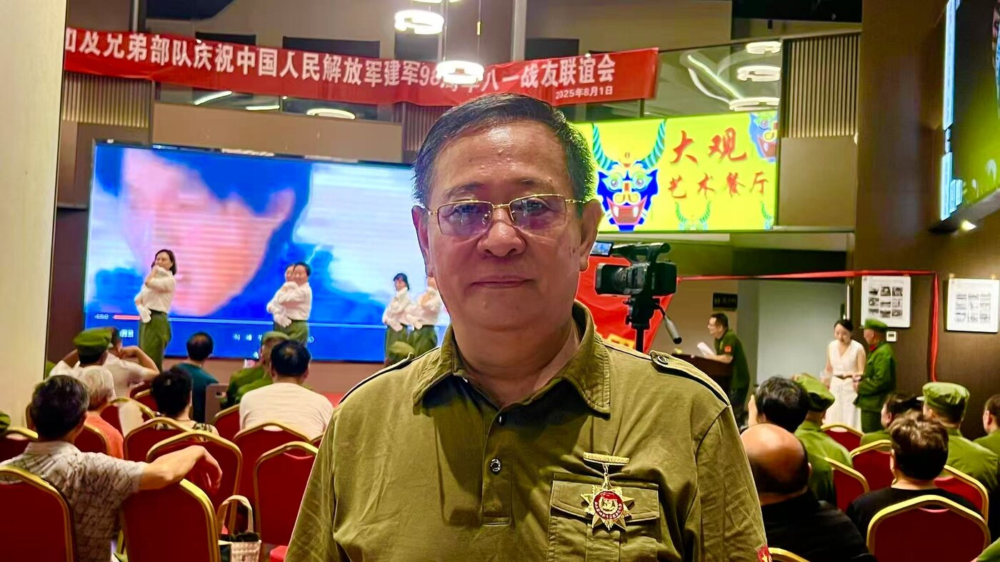
这身军装，是退伍多年后战友聚会时穿上的——但那份牵挂，从没退役。
从部队转业后，爸爸成为了贵州省公安厅的一员。照片里那件厚重的呢子大衣，裹着一个刚刚而立之年、却已经扛起责任的人。
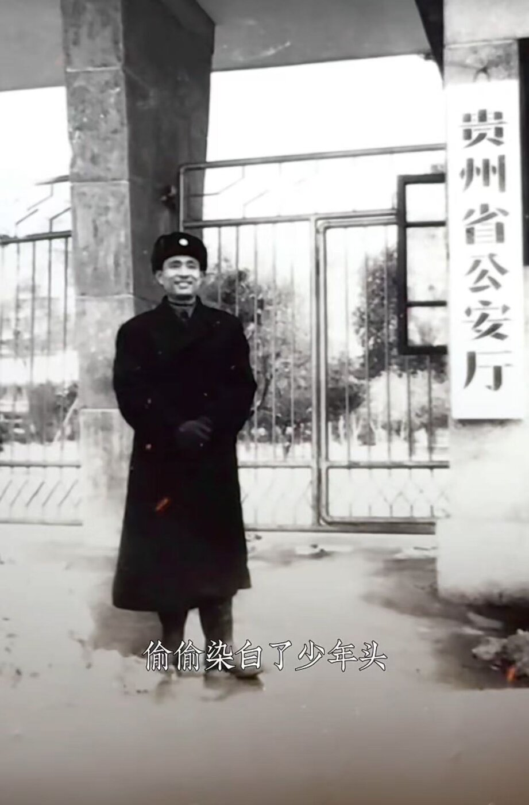
每月十五，他都会去寺庙走一走、拜一拜。
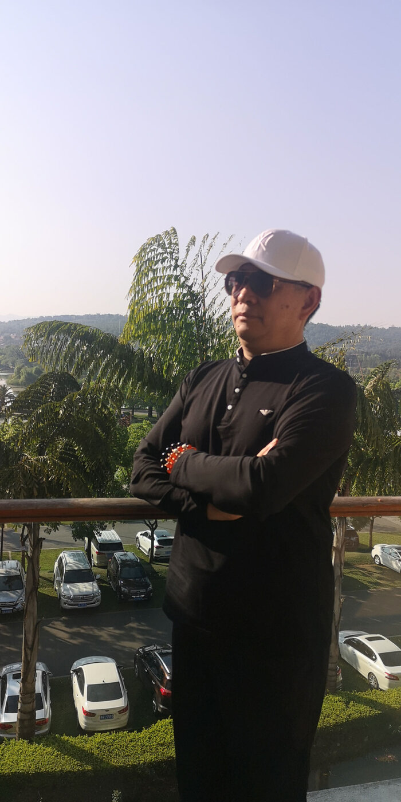
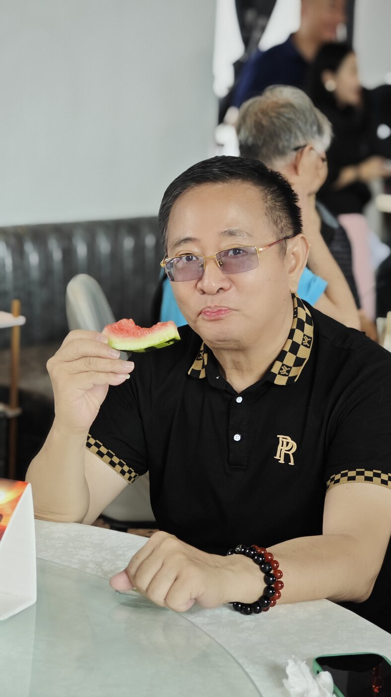
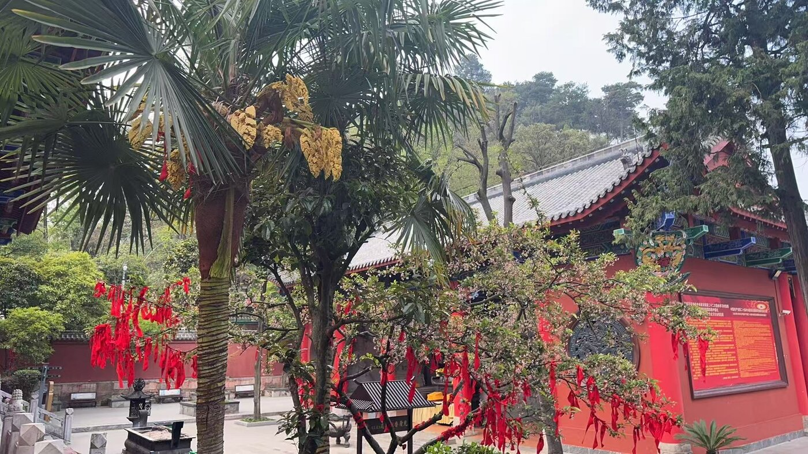
这些年，爸爸没有闲下来。他还学着开起了小飞机，也重新弹起了钢琴——年少时，是一支口琴陪他熬过南疆的长夜，如今琴声换了一种，心境却依然是那份从容。
他的视频号里，藏着这些镜头背后的日子。
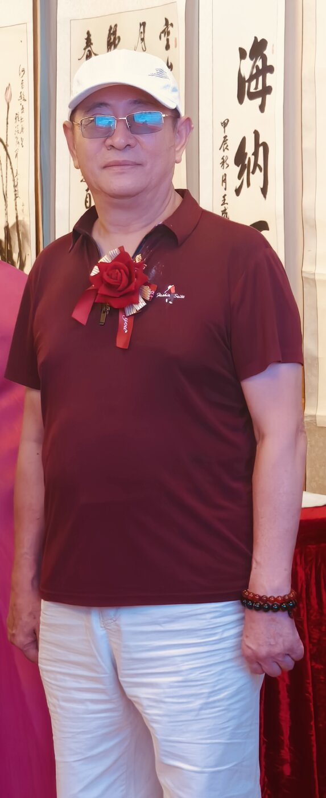
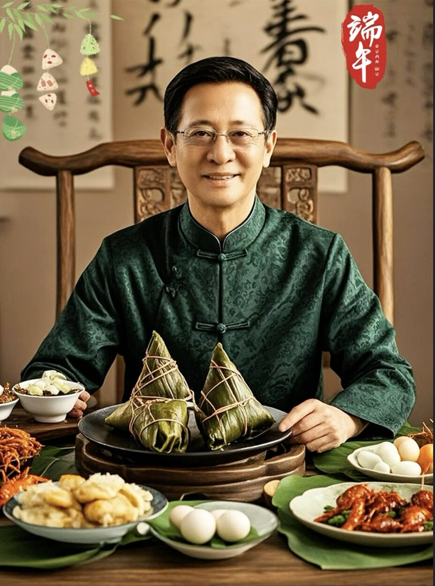
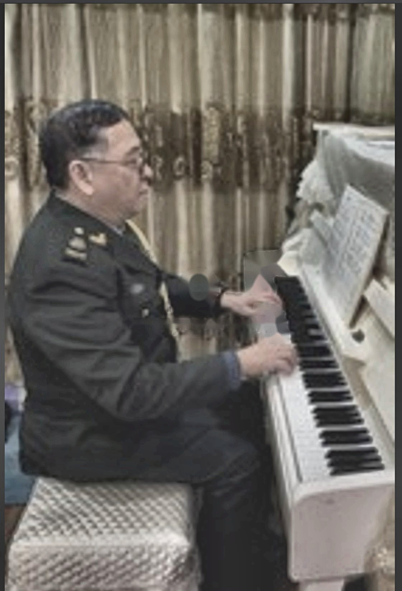
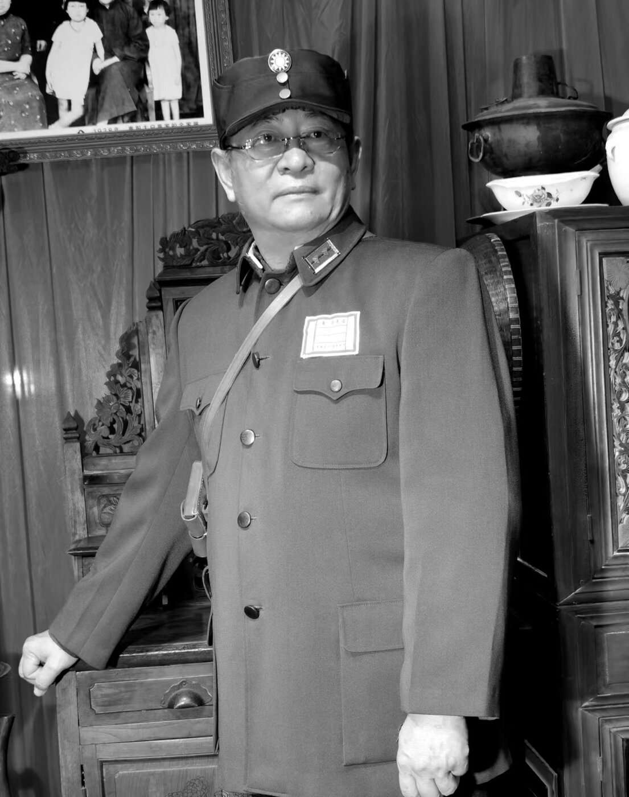
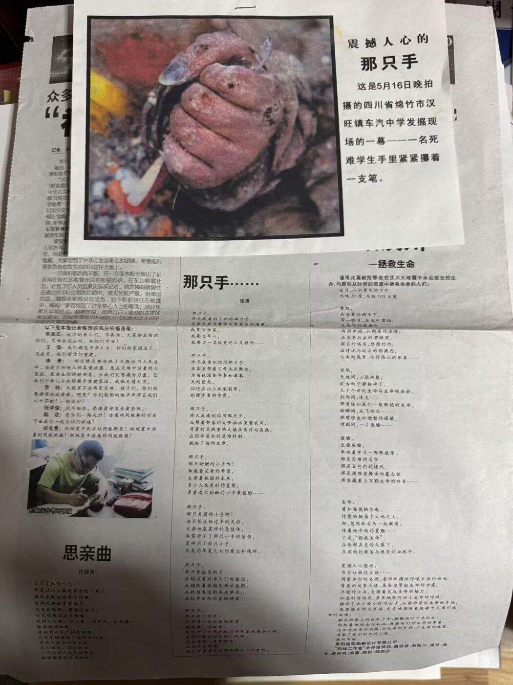
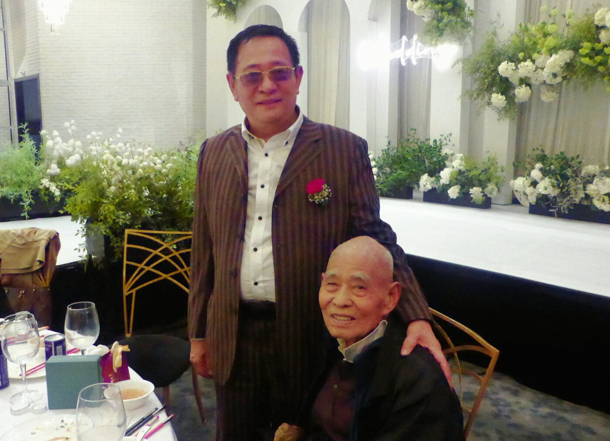
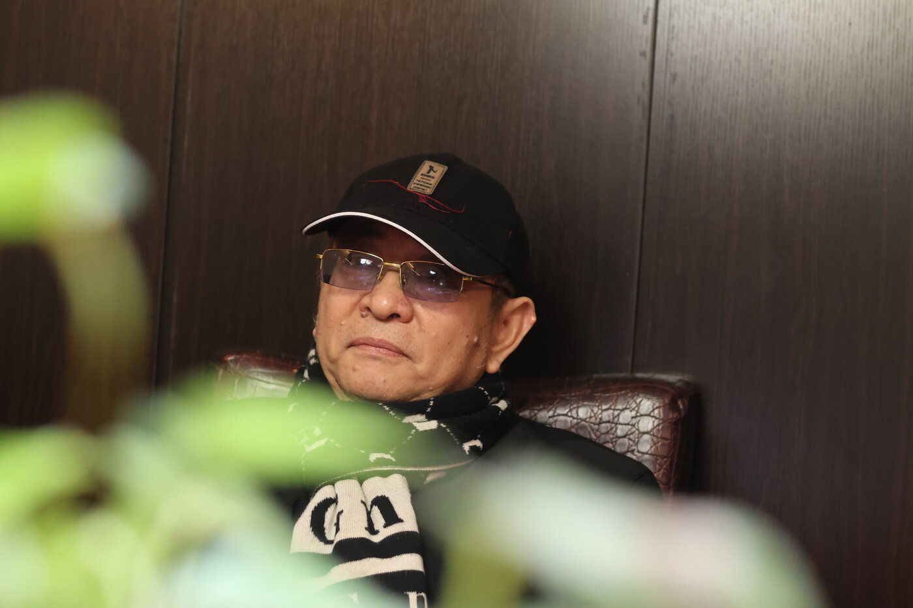
爸，我想对你说，你真的是天底下最好的爸爸！
爸爸对我的爱，让我也有能力去爱爸爸、爱妈妈、爱这个家，也爱着这个世界。
为了这个家，爸爸默默承担了太多从未说出口的辛苦和委屈。他把所有的风霜扛在肩上，并把所有的温柔留给了我。
我在爸爸的肩上，看过日出日落，斗转星移，山河万千。雪落在他身上，我伸手去接，指尖刚触到，那片雪花却已经悄悄化成了水。往事像一列接一列的火车，从眼前疾驰而过：认真的爸爸，严肃的爸爸，笑容满面的爸爸。夜幕四合时，他在台灯下读报，或是坐在客厅里看新闻，又或是开着车，载着一家人去公园，看那些寻常又珍贵的风景。一节节车厢，装满了旧日时光，轰鸣着，从我眼前呼啸而过。
爸爸，生日快乐。
愿您此后岁岁，身体健康，平安顺遂，自在无忧。